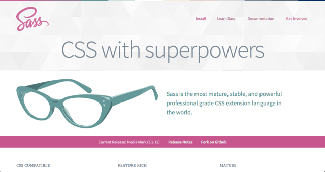
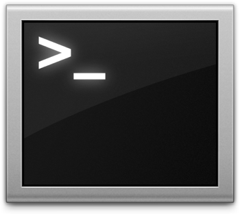
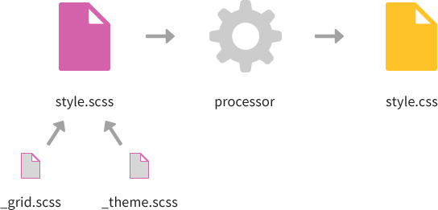
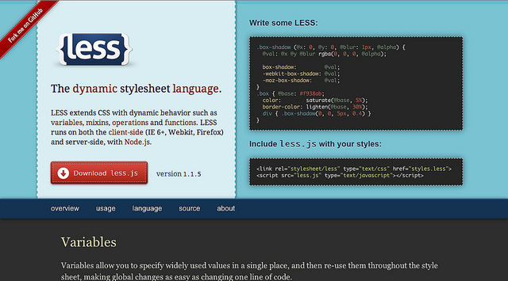
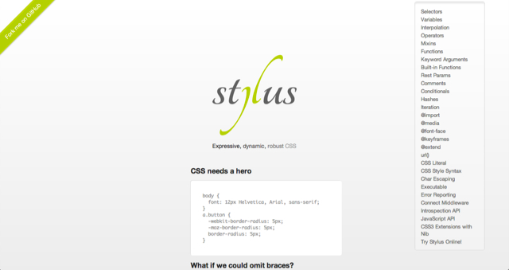

class: center, middle ## An Introduction to # Sassy CSS --- # Topics - What's Sass/SCSS? - Installing Sass - Variables - Nesting - Mixins - Partials - Inheritance --- .center[  ] <figure> <blockquote class="blockquote"> <p> Sass is an extension of CSS3, adding nested rules, variables, mixins, selector inheritance, and more. It's translated to well-formatted, standard CSS using the command line tool or a web-framework plugin. </p> </blockquote> <figcaption> <cite> [Sass-lang.com](http://sass-lang.com) </cite> </figcaption> </figure> ??? - Syntactically awesome stylesheets - An extension of CSS which adds additional functionality - Generates well formatted CSS - Makes it easier to organise and maintain your stylesheets - Written in Ruby, and distributed as a gem --- # it looks like CSS .pull-left[ ### .scss ```scss $blue: #3bbfce; $margin: 16px; .content-navigation { border-color: $blue; color: darken($blue, 9%); } .border { padding: $margin / 2; margin: $margin / 2; border-color: $blue; } ``` ] ??? SCSS only adds features to CSS, rather than defining an entirely new syntax (We aren't going to talk about the indented .sass syntax right now). This means that every valid CSS file is also a valid SCSS file, which is convenient for projects with existing style rules. --- # it looks like CSS <b>but</b> .delta[ - it's neater - it's faster to write - it allows for more experimentation - it's more flexible - it's more manageable - it's got <b>variables!</b> ] ??? So you can: - experiment more - make global changes quickly - make reusable modules - handle responsive web design neatly - have less cluttered code --- # workflow - css - images - scripts - index.html --- # workflow - css - images - <b>sass</b> - scripts - index.html --- # workflow - css - images - sass - <b>style.scss</b> - scripts - index.html --- # workflow .center.middle.push-down[ ] ??? Sass is a scripting language that is interpreted into Cascading Style Sheets (CSS). --- # workflow - css - style.css - images - sass - style.scss - scripts - index.html --- # all you do is... - make a .scss file - write to it, just like normal - translate it to a CSS file/folder - `sass --watch style.scss:style.css` - `sass --watch stylesheets/sass:stylesheets/compiled` - and any changes you make to your SCSS file(s) will be compiled to CSS --- # workflow in Rails (> 3.1) - Change any .css file's extension to `.css.scss` - <b> That's it!! </b> The Rails asset pipeline handles the rest. Since the Rails asset pipeline automatically uses Sass to process files with the .scss extension, any .css.scss file will be run through the Sass preprocessor before being packaged up for delivery to the browser. --- # in your work folder for the day... - create a new directory - your_name/ - sassypants/ - index.html - css/ - sass/ - style.scss --- class: middle, center  .epsilon[ ```bash $ gem install sass ``` ] --- class: inverse, middle .center[ ] <h1> Guard <3</h1> ```bash $ gem install guard-sass $ gem install guard-livereload # download the livereload chrome extension ``` --- # $variables variables allow you to use the same value in multiple places, as well as perform basic maths and functions. --- .pull-left[ ## SCSS ``` $heading-color: #222; $heading-font: "Open Sans", Arial, sans-serif; $body-font: Georgia, serif; $margin: 16px; $base-type-size: 1em; h1 { color: $heading-color; font-family: $heading-font; font-size: $base-type-size * 2; margin: 0 0 $margin 0; } p { font-family: $body-font; font-size: $base-type-size; } ``` ] .pull-right[ ## CSS ``` h1 { color: #222; font-family: "Open Sans", Arial, sans-serif; font-size: 2em; margin: 0 0 16px 0; } p { font-family: Georgia, serif; font-size: 1em; } ``` ] --- # $variables - CSS was crafted to be simple, but scaling simplicity is difficult. - In a large project using only CSS, slight variations of colors, fonts, number, and other properties arise. If we want to change all shades of blue to shades of red, it would be tedious and could take some time. - Sass allows us to define variables to eliminate duplication and write more expressive code. - Variables are awesome because if you change one variable, you change it everywhere. - Save hours of search and replacing! --- # operations & color math, yay! - math: + - / * - color: darken, lighten, saturation, opacity, and more - http://sass-lang.com/documentation/Sass/Script/Functions.html ``` $base-color: #AD141E; a { color: $base-color; } a:hover { color: darken( $base-color, 10% ); } ``` --- class: center, middle # Make the pink (#ea4c88) button! ## On hover, `darken` the background 4% --- # nesting Sass avoids repetition by nesting selectors within one another. The same thing works with properties. --- # write <b>html</b> as normal ```html <nav> <ul> <li><a href="#">Home</a></li> <li><a href="#">About</a></li> <li><a href="#">Services</a></li> <li><a href="#">Contact</a></li> <li><a href="#">Sign Up</a></li> </ul> </nav> ``` --- # nest & indent .pull-left[ ```scss nav { font-family: $heading-font; ul { margin: 0; padding: 0; li { list-style: none; a { background: #222; color: #fff; display: block; float: left; padding: $margin $margin*1.5; text-decoration: none; } } } } ``` ] -- .pull-right[ ``` nav { font-family: "Open Sans", Arial, sans-serif; } nav ul { margin: 0; padding: 0; } nav ul li { list-style: none; } nav ul li a { background: #222; color: #fff; display: block; float: left; padding: 16px 24px; text-decoration: none; } ``` ] --- # nesting > Nesting rocks because you're going to write a lot less CSS by avoiding repetition. Use indentation to quickly scan and see relationships. `Gotcha`: pay attention to CSS output because selector length can grow wildly out of control. --- # & ampersand - pulls the parent selector into the & ``` .fancybox { li a.fancy { &:link { color: $primary-color; } &:visited { color: darken($primary-color, 20%); } &:hover { color: lighten($primary-color, 10%); } } } ``` -- ``` /* output css */ .fancybox li a.fancy:link { color: red; } .fancybox li a.fancy:visited { color: #990000; } .fancybox li a.fancy:hover { color: #ff3333; } ``` ??? make a point about avoiding qualified selectors (increases specificity, limits reusability) --- # @mixins mixins allow you to re-use whole chunks of CSS, properties or selectors. You can even give them arguments. --- # @mixins .pull-left[ - begin with @mixin - give it a name - add your $variable(s) - give optional default value(s) ] .pull-right[ ``` @mixin roundcorner ($radius: 4px) { -webkit-border-radius: $radius; -moz-border-radius: $radius; border-radius: $radius; } ``` ] --- # @mixins - call it with @include .pull-left[ #### .scss ``` .fancybox { width: 100px; @include roundcorner(10px); } .fancybox-sm { width: 40px; /* called without params */ @include roundcourner(); } ``` ] -- .pull-right[ #### output .css ``` .fancybox { width: 100px; -webkit-border-radius: 10px; -moz-border-radius: 10px; border-radius: 10px; } .fancybox-sm { width: 40px; /* gets default $radius from mixin */ -webkit-border-radius: 4px; -moz-border-radius: 4px; border-radius: 4px; } ``` ] --- # @mixins > Mixins rock because they let you reduce massive chunks of CSS into reusable "includes" that you can use over and over again, while only having to define them once. .pull-left[ #### define once ```css @mixin opacity($value){ $IEValue: $value*100; opacity: $value; -ms-filter: "progid:DXImageTransform.Microsoft.Alpha(Opacity="+$IEValue+")"; filter: alpha(opacity=$IEValue); } ``` ] .pull-right[ #### use anywhere! ``` img.preload{ @include opacity(0); &.complete{ @include opacity(1); } } ``` ] --- # @extend The @extend directive (tells) Sass that one selector should inherit the styles of another selector. --- # @extend - nest @extend .classname - goes inside another class - don't have to use multiple classes - association is in the CSS not HTML --- # @extend .pull-left[ ##### .scss ``` .module { background: #fff; color: #444; } .main_module { @extend .module; min-height: 3em; } .sidebar_module { @extend .module; min-height: 2em; } ``` ] -- .pull-right[ ##### output .css ``` .module, .main_module, .sidebar_module { background: #fff; color: #444; } .main_module { min-height: 3em; } .sidebar_module { min-height: 2em; } ``` ] --- # @extend > extend lets you add styles from one selector to another, as well as its own styles. .pull-left[ #### .scss ``` .error { border: 1px #f00; background: #fdd; } .error.intrusion { font-size: 1.3em; font-weight: bold; } .badError { @extend .error; border-width: 3px; } ``` ] -- .pull-right[ #### output css ``` .error, .badError { border: 1px #f00; background: #fdd; } .error.intrusion, .badError.intrusion { font-size: 1.3em; font-weight: bold; } .badError { border-width: 3px; } ``` ] --- # _partials partials are snippets of scss that are saved into files meant to be imported. They begin with an underscore and don't get compiled. --- # _partials - filename starts with an underscore e.g. "_grid.scss" - import it into your .scss file - `@import "grid";` - save on HTTP requests - better structure ??? faster sass compilation shareable components --- # _partials .center.push-down[  ] --- # _partials > Sass partials are a way to break out your Sass code into multiple files, and then import them to be compiled into one master CSS file. This feature helps you organize your Sass code the way that makes the most sense for you while working Make your files more manageable by breaking them into discreet external modules. --- # examples - <b> Seperate partials for: </b> - reset, grids, typography, colors, forms, tables, etc. - mixins & variables - site sub-sections --- class: center, middle # The Others --- class: center, middle  --- class: center, middle  --- # what I didn't cover today - functions - silent classes / placeholder selectors - Compass / Bourbon - Sass control directives: - `@if` statement - `@for` loop - `@while` loop - `@each` --- # resources - [Official Sass Website](http://sass-lang.com) - [The Sass Way](http://thesassway.com/) - [A List Apart: Why Sass?](http://alistapart.com/article/why-sass) - [Code School: Assembling Sass](https://www.codeschool.com/courses/assembling-sass) - [ThoughtBot: Controlling Color with Sass](http://robots.thoughtbot.com/controlling-color-with-sass-color-functions) - [Tuts+: Guard is your best friend](http://net.tutsplus.com/tutorials/tools-and-tips/guard-is-your-best-friend/) - [Josh Broton: My Sass and CSS Best Practices](http://joshbroton.com/my-sass-less-css-practices-modularization-nesting-variables-mixins-etc/)